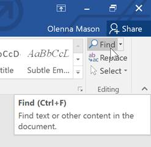
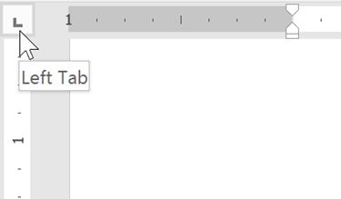

Bekerja dengan Teks
Jika Anda baru mengenal Microsoft Word, Anda harus mempelajari dasar - dasar mengetik, mengedit, dan mengatur teks. Tugas dasar mencakup kemampuan untuk menambah, menghapus, dan memindahkan teks dalam dokumen Anda, serta cara memotong, menyalin, dan menempel.
Dasar-dasar Teks (Text Basics)
Menggunakan titik penyisipan untuk menambahkan teks
Titik penyisipan adalah garis vertikal yang berkedip di dokumen Anda. Ini menunjukkan di mana Anda dapat memasukkan teks pada halaman. Anda dapat menggunakan titik penyisipan dalam berbagai cara.
Dokumen kosong : Saat dokumen kosong baru terbuka, titik penyisipan akan muncul di sudut kiri atas halaman. Jika mau, Anda dapat mulai mengetik dari lokasi ini.

Menambahkan spasi : Tekan bilah spasi untuk menambahkan spasi setelah kata atau di antara teks.
Baris paragraf baru : Tekan Enter pada keyboard Anda untuk memindahkan titik penyisipan ke baris paragraf berikutnya.
Penempatan manual :Setelah Anda mulai mengetik, Anda dapat menggunakan mouse untuk memindahkan titik penyisipan ke tempat tertentu di dokumen Anda. Cukup klik lokasi di teks tempat Anda ingin meletakkannya.
Tombol panah : Anda juga dapat menggunakan tombol panah pada keyboard untuk memindahkan titik penyisipan. The meninggalkan dan kanan tombol panah akan bergerak antara karakter yang berdekatan pada baris yang sama, sedangkan up dan turun panah akan bergerak antara garis ayat. Anda juga dapat menekan Ctrl+Left atau Ctrl+Right untuk berpindah antar kata dengan cepat.
Dalam dokumen kosong baru, Anda dapat mengklik dua kali mouse untuk memindahkan titik penyisipan ke tempat lain di halaman.
Memilih teks
Sebelum Anda dapat memindahkan atau memformat teks, Anda harus memilihnya. Untuk melakukan ini, klik dan seret mouse Anda ke atas teks, lalu lepaskan mouse. Kotak yang disorot akan muncul di atas teks yang dipilih.
Saat Anda memilih teks atau gambar di Word, bilah alat arahkan kursor dengan pintasan perintah akan muncul. Jika bilah alat tidak muncul pada awalnya, coba arahkan mouse ke atas pilihan.
Untuk memilih beberapa baris teks:
Gerakkan penunjuk tetikus ke kiri garis mana pun sehingga menjadi panah miring ke kanan.

Klik mouse. Garis akan dipilih.

Untuk memilih beberapa baris, klik dan seret mouse ke atas atau ke bawah.
Untuk memilih semua teks dalam dokumen Anda, pilih perintah Select pada tab Home, lalu klik Select All. Anda juga dapat menekan Ctrl + A pada keyboard Anda.

Pintasan lainnya termasuk mengklik dua kali untuk memilih kata dan mengklik tiga kali untuk memilih seluruh kalimat atau paragraf.
Untuk menghapus teks:
Ada beberapa cara untuk menghapus, atau menghapus, teks:
Untuk menghapus teks di sebelah kiri titik penyisipan, tekan tombol Backspace pada keyboard Anda.
Untuk menghapus teks di sebelah kanan titik penyisipan, tekan tombol Delete pada keyboard Anda.
Pilih teks yang ingin Anda hapus, lalu tekan tombol Hapus.
Jika Anda memilih teks dan mulai mengetik, teks yang dipilih akan otomatis dihapus dan diganti dengan teks baru.
Menyalin dan memindahkan teks
Word memungkinkan Anda untuk menyalin teks yang sudah ada di dokumen Anda dan menempelkannya di tempat lain, yang dapat menghemat banyak waktu dan tenaga. Jika Anda ingin memindahkan teks di dalam dokumen Anda, Anda dapat memotong dan menempelkan atau menyeret dan melepaskan.
Untuk menyalin dan menempel teks:
Pilih teks yang ingin Anda salin.

Klik perintah Salin pada tab Beranda. Anda juga dapat menekan Ctrl+C pada keyboard Anda.

Tempatkan titik penyisipan di tempat Anda ingin teks muncul.

Klik perintah Tempel pada tab Beranda. Anda juga dapat menekan Ctrl+V pada keyboard Anda.
Teks akan muncul.

Untuk memotong dan menempelkan teks:
Pilih teks yang ingin Anda potong.
Klik perintah Potong pada tab Beranda. Anda juga dapat menekan Ctrl + X pada keyboard Anda.

Tempatkan titik penyisipan Anda di tempat Anda ingin teks muncul.

Klik perintah Tempel pada tab Beranda. Anda juga dapat menekan Ctrl+V pada keyboard Anda.
Teks akan muncul.
Anda juga dapat memotong, menyalin, dan menempel dengan mengklik kanan dokumen Anda dan memilih tindakan yang diinginkan dari menu tarik-turun. Saat Anda menggunakan metode ini untuk menempel, Anda dapat memilih dari tiga opsi yang menentukan bagaimana teks akan diformat: Keep Source Formatting, Merge Formatting, dan Keep Text Only. Anda dapat mengarahkan mouse ke setiap ikon untuk melihat seperti apa tampilannya sebelum Anda memilihnya.
Untuk menarik dan melepaskan teks:
Pilih teks yang ingin Anda pindahkan.

Klik dan seret teks ke lokasi yang Anda inginkan untuk memunculkannya. Sebuah persegi panjang kecil akan muncul di bawah panah untuk menunjukkan bahwa Anda sedang memindahkan teks.
Lepaskan mouse, dan teks akan muncul.

Jika teks tidak muncul di lokasi yang Anda inginkan, Anda dapat menekan tombol Enter pada keyboard untuk memindahkan teks ke baris baru.
Batalkan dan Ulangi
Katakanlah Anda sedang mengerjakan sebuah dokumen dan secara tidak sengaja menghapus beberapa teks. Untungnya, Anda tidak perlu mengetik ulang semua yang baru saja Anda hapus! Word memungkinkan Anda untuk membatalkan tindakan terbaru saat Anda melakukan kesalahan seperti ini.
Untuk melakukannya, cari dan pilih perintah Undo pada Quick Access Toolbar. Anda juga dapat menekan Ctrl+Z pada keyboard Anda. Anda dapat terus menggunakan perintah ini untuk membatalkan beberapa perubahan berturut-turut.

Sebaliknya, perintah Redo memungkinkan Anda untuk membalikkan undo terakhir. Anda juga dapat mengakses perintah ini dengan menekan Ctrl+Y pada keyboard Anda.

Simbol
Jika Anda perlu memasukkan karakter yang tidak biasa yang tidak ada di keyboard Anda, seperti a hak cipta (©) atau merek dagang (™), Anda biasanya dapat menemukannya dengan perintah Simbol.
Untuk menyisipkan simbol:
Tempatkan titik penyisipan di tempat Anda ingin simbol muncul.

Klik tab Sisipkan.
Cari dan pilih perintah Simbol, lalu pilih simbol yang diinginkan dari menu tarik-turun. Jika Anda tidak melihat yang Anda inginkan, pilih Simbol Lainnya...

Simbol akan muncul di dokumen.

Tantangan!
Buka dokumen latihan kami.
Gulir ke halaman 2.
Tempatkan titik penyisipan di bagian atas dokumen dan ketik Now Introducing...
Gunakan tombol panah Anda untuk memindahkan titik penyisipan ke harga Paket Detail Tanda Tangan dan ubah menjadi $99,99 /bln.
Di bagian bawah dokumen, gunakan seret dan lepas untuk bergerak Serahkan saja detailnya kepada kami hingga akhir baris terakhir.
Di akhir baris yang baru saja Anda pindahkan, masukkan simbol merek dagang. Jika Anda tidak dapat menemukan simbol merek dagang, masukkan simbol lain pilihan Anda.
Setelah selesai, dokumen Anda akan terlihat seperti ini:

Memformat Teks (Formatting Text)
Teks yang diformat dapat menarik perhatian pembaca ke bagian tertentu dari dokumen dan menekankan informasi penting. Di Word, Anda memiliki beberapa opsi untuk menyesuaikan teks, termasuk font, size, dan color. Anda juga dapat menyesuaikan perataan teks untuk mengubah tampilannya di halaman.
Untuk mengubah ukuran font:
Pilih teks yang ingin Anda ubah.

Pada tab Beranda, klik panah tarik-turun Ukuran Font. Pilih ukuran font dari menu. Jika ukuran font yang Anda butuhkan tidak tersedia di menu, Anda dapat mengklik kotak Font Size dan ketik ukuran yang diinginkan, lalu tekan Enter.

Ukuran font akan berubah dalam dokumen.
Anda juga dapat menggunakan perintah Grow Font dan Shrink Font untuk mengubah ukuran font.

Untuk mengubah font:
Secara default, font setiap dokumen baru diatur ke Calibri. Namun, Word menyediakan banyak font lain yang dapat Anda gunakan untuk menyesuaikan teks.
Pilih teks yang ingin Anda ubah.

Pada tab Beranda, klik panah tarik-turun di samping kotak Font. Menu gaya font akan muncul.
Pilih gaya font yang ingin Anda gunakan.

Font akan berubah dalam dokumen.

Saat membuat dokumen profesional atau dokumen yang berisi beberapa paragraf, sebaiknya pilih font yang mudah dibaca. Seiring dengan Calibri, font bacaan standar termasuk Cambria, Times New Roman, dan Arial.
Untuk mengubah warna font:
Pilih teks yang ingin Anda ubah.

Pada tab Beranda, klik panah turun bawah Warna Font. The Font Color menu muncul.

Pilih warna font yang ingin Anda gunakan. Warna font akan berubah dalam dokumen.

Pilihan warna Anda tidak terbatas pada menu drop-down yang muncul. Pilih More Colors di bagian bawah menu untuk mengakses kotak dialog Colors. Pilih warna yang Anda inginkan, lalu klik OK.

Untuk menggunakan perintah Tebal, Miring, dan Garis Bawah:
Perintah Tebal, Miring, dan Garis Bawah dapat digunakan untuk membantu menarik perhatian pada kata atau frasa penting.
Pilih teks yang ingin Anda ubah.
Pada tab Beranda, klik perintah Tebal ( B ), Miring ( I ), atau Garis Bawah ( U ) di grup F ont. Dalam contoh kita, kita akan mengklik Bold.

Teks yang dipilih akan diubah dalam dokumen.

Untuk mengubah huruf besar/kecil teks:
Saat Anda perlu mengubah huruf besar/kecil teks dengan cepat, Anda dapat menggunakan perintah Ubah Huruf Besar-kecil daripada menghapus dan mengetik ulang teks.
Pilih teks yang ingin Anda ubah.

Pada tab Beranda, klik perintah Ubah Kasus di grup Font.
Menu tarik-turun akan muncul. Pilih opsi kasus yang diinginkan dari menu.

Kasus teks akan diubah dalam dokumen.

Untuk menyorot teks:
Menyoroti dapat menjadi alat yang berguna untuk menandai teks penting dalam dokumen Anda.
Pilih teks yang ingin Anda sorot.

Dari tab Beranda, klik panah tarik-turun Warna Sorotan Teks. The Highlight Color menu muncul.

Pilih warna sorotan yang diinginkan. Teks yang dipilih kemudian akan disorot dalam dokumen.

Untuk menghapus sorotan, pilih teks yang disorot, lalu klik panah drop-down Warna Sorotan Teks. Pilih Tanpa Warna dari menu tarik-turun.

Jika Anda perlu menyorot beberapa baris teks, mengubah mouse menjadi stabilo dapat menjadi alternatif yang berguna untuk memilih dan menyorot setiap baris. Klik perintah Warna Sorotan Teks, dan kursor berubah menjadi stabilo. Anda kemudian dapat mengklik dan menyeret stabilo di atas garis yang ingin Anda sorot.
Untuk mengubah perataan teks:
Secara default, Word meratakan teks ke margin kiri dalam dokumen baru. Namun, ada kalanya Anda ingin menyesuaikan perataan teks ke tengah atau ke kanan.
Pilih teks yang ingin Anda ubah.
Pada tab Beranda, pilih salah satu dari empatopsi penyelarasan dari grup Paragraf. Dalam contoh kita, kita telah memilih Center Alignment.
Teks akan diselaraskan kembali dalam dokumen.
Klik panah di tayangan slide di bawah ini untuk mempelajari lebih lanjut tentang empat opsi perataan teks.
arrow_back_ios
Align Text Left : Ini menyelaraskan semua teks yang dipilih ke margin kiri. Perintah Align Text Left adalah perataan paling umum dan dipilih secara default saat dokumen baru dibuat.

Tengah : Ini menyelaraskan teks dengan jarak yang sama dari margin kiri dan kanan.
Align Text Right : Ini menyelaraskan semua teks yang dipilih ke margin kanan.

Justify : Teks yang dibenarkan sama di kedua sisi. Ini berbaris sama ke margin kanan dan kiri. Banyak surat kabar dan majalah menggunakan justifikasi penuh.
arrow_back_ios
Anda dapat menggunakan fitur Set as Default dari Word untuk menyimpan semua perubahan pemformatan yang telah Anda buat dan secara otomatis menerapkannya ke dokumen baru. Untuk mempelajari cara melakukannya, baca artikel kami tentang Mengubah Pengaturan Default Anda di Word.
Tantangan!
Buka dokumen latihan kami.
Gulir ke halaman 2.
Pilih kata For Rent dan ubah ukuran font menjadi 48 pt.
Dengan teks yang masih dipilih, ubah font menjadi Franklin Gothic Demi. Catatan : Jika Anda tidak melihat font ini di menu, Anda dapat memilih yang lain.
Gunakan perintah Change Case untuk mengubah For Rent menjadi UPPERCASE.
Ubah warna tulisan For Rent menjadi Gold, Accent 4.
Hapus sorotan dari nomor telepon (919-555-7237).
Pilih semua teks dari For Rent hingga (919-555-7237) dan Center Align.
Miringkan teks dalam paragraf di bawah Tentang Villa Piña.
Setelah selesai, halaman Anda akan terlihat seperti ini:
Menggunakan Find dan Replace
Saat Anda bekerja dengan dokumen yang lebih panjang, akan sulit dan memakan waktu lama untuk menemukan kata atau frasa tertentu. Word dapat secara otomatis mencari dokumen Anda menggunakan fitur Temukan, dan memungkinkan Anda mengubah kata atau frasa dengan cepat menggunakan Ganti.
Untuk menemukan teks:
Dalam contoh kami, kami telah menulis makalah akademis dan akan menggunakan perintah Temukan untuk menemukan semua contoh kata tertentu.
Dari tab Beranda, klik perintah Temukan. Anda juga dapat menekan Ctrl+F pada keyboard Anda.

The panel navigasi akan muncul di sisi kiri layar.
Ketikkan teks yang ingin Anda temukan di bidang di bagian atas panel navigasi. Dalam contoh kita, kita akan mengetikkan kata yang kita cari.

Jika teks ditemukan dalam dokumen, teks akan disorot dengan warna kuning dan pratinjau hasilnya akan muncul di panel navigasi. Anda juga dapat mengklik salah satu hasil di bawah panah untuk melompat ke sana.
Setelah selesai, klik X untuk menutup panel navigasi. Sorotan akan hilang.

Untuk opsi penelusuran lainnya, klik panah tarik-turun di samping bidang penelusuran.

Untuk mengganti teks:
Anda mungkin menemukan bahwa Anda telah membuat kesalahan berulang kali di seluruh dokumen Anda, seperti salah mengeja nama seseorang, atau bahwa Anda perlu menukar kata atau frasa tertentu dengan yang lain. Anda dapat menggunakan fitur Temukan dan Ganti Word untuk melakukan revisi dengan cepat. Dalam contoh kami, kami akan menggunakan Temukan dan Ganti untuk mengubah judul majalah sehingga disingkat.
Dari tab Beranda, klik perintah Ganti. Anda juga dapat menekan Ctrl+H pada keyboard Anda.

The Cari dan Ganti kotak dialog akan muncul.
Ketik teks yang ingin Anda temukan di Find apa: lapangan.
Ketik teks yang ingin Anda ganti di bidang Ganti dengan :, lalu klik Temukan Berikutnya.

Word akan menemukan teks pertama dan menyorotnya dalam warna abu-abu.
Tinjau teks untuk memastikan Anda ingin menggantinya. Dalam contoh kita, teks adalah bagian dari judul makalah dan tidak perlu diganti. Kami akan mengklik Temukan Berikutnya lagi untuk melompat ke contoh berikutnya.

Jika Anda ingin menggantinya, Anda dapat mengklik Ganti untuk mengubah setiap contoh teks. Anda juga dapat mengklik Ganti Semua untuk mengganti setiap teks di seluruh dokumen.

Teks akan diganti.

Setelah selesai, klik Tutup atau Batal untuk menutup kotak dialog.
Untuk opsi pencarian tambahan, klik Lainnya di kotak dialog Temukan dan Ganti. Dari sini, Anda dapat memilih opsi tambahan, seperti mencocokkan huruf besar-kecil dan mengabaikan tanda baca.

Saat menggunakan Ganti Semua, penting untuk diingat bahwa ia dapat menemukan kecocokan yang tidak Anda antisipasi dan mungkin sebenarnya tidak ingin Anda ubah. Anda hanya boleh menggunakan opsi ini jika Anda benar-benar yakin itu tidak akan menggantikan apa pun yang tidak Anda inginkan.
Tantangan!
Buka dokumen latihan kami.
Dengan menggunakan fitur Temukan, tentukan halaman mana yang menyebutkan Caroline Gordon.
Nama TS Eliot salah eja. Menggantikan semuacontoh Elliot dengan Eliot. Ketika Anda selesai, Anda seharusnya melakukan tiga penggantian.
Nama Allen Tate juga salah eja. Temukan dan Ganti Alan dengan Allen. Petunjuk : Jangan gunakan Ganti Semua. Jika tidak, Anda mungkin tidak sengaja mengganti kata balance.
Indentasi dan Tab (Indents and Tabs)
Teks indentasi menambahkan struktur ke dokumen Anda dengan memungkinkan Anda memisahkan informasi. Baik Anda ingin memindahkan satu baris atau seluruh paragraf, Anda dapat menggunakan pemilih tab dan penggaris horizontal untuk menyetel tab dan indentasi.
Teks indentasi
Dalam banyak jenis dokumen, Anda mungkin hanya ingin membuat indentasi baris pertama dari setiap paragraf. Ini membantu memisahkan paragraf satu sama lain secara visual.

Anda juga dapat membuat indentasi setiap baris kecuali baris pertama, yang dikenal sebagai indentasi gantung.

Untuk membuat indentasi menggunakan tombol Tab:
Cara cepat untuk membuat indentasi adalah dengan menggunakan tombol Tab. Ini akan membuat indentasi baris pertama 1/2 inci.
Tempatkan titik penyisipan di awal paragraf yang ingin Anda indentasi.
Tekan tombol Tab. Pada Penggaris, Anda akan melihat penanda indentasi baris pertama bergerak ke kanan sebesar 1/2 inci.
Baris pertama paragraf akan menjorok.

Jika Anda tidak dapat melihat Penggaris, pilih tab Lihat, lalu klik kotak centang di sebelah Penggaris.

Penanda indentasi
Dalam beberapa kasus, Anda mungkin ingin lebih mengontrol indentasi. Word menyediakan penanda indentasi yang memungkinkan Anda membuat indentasi paragraf ke lokasi yang Anda inginkan.

Penanda indentasi terletak di sebelah kiri penggaris horizontal, dan mereka menyediakan beberapa opsi indentasi:
Penanda indentasi baris pertama menyesuaikan indentasi baris pertama
pertama menyesuaikan indentasi baris pertama
Penanda indentasi gantung menyesuaikan indentasi gantung
menyesuaikan indentasi gantung
Meninggalkan indent marker bergerak baik yang indent lini pertama dan menggantung tanda indent pada waktu yang sama (indentasi semua baris
dalam paragraf)
bergerak baik yang indent lini pertama dan menggantung tanda indent pada waktu yang sama (indentasi semua baris
dalam paragraf)
Untuk membuat indentasi menggunakan penanda indentasi:
Tempatkan titik penyisipan di mana saja dalam paragraf yang ingin Anda indentasi, atau pilih satu atau beberapa paragraf.

Klik dan seret penanda indentasi yang diinginkan. Dalam contoh kita, kita akan mengklik dan menyeret penanda indentasi kiri.

Lepaskan mouse. Paragraf akan menjorok.

Untuk membuat indentasi menggunakan perintah Indent:
Jika Anda ingin membuat indentasi beberapa baris teks atau semua baris paragraf, Anda dapat menggunakan perintah Indent. Perintah Indent akan menyesuaikan indentasi sebesar 1/2 inci.
Pilih teks yang ingin Anda indentasi.

Pada tab Beranda, klik perintah Tambah Indentasi atau Kurangi Indentasi.

Teks akan indent.
Untuk menyesuaikan jumlah indentasi, pilih tab Layout di dekat nilai yang diinginkan dalam kotak di bawah Indent.
tab
Menggunakan tab memberi Anda lebih banyak kontrol atas penempatan teks. Secara default, setiap kali Anda menekan tombol Tab, titik penyisipan akan bergerak 1/2 inci ke kanan. Menambahkan perhentian tab ke Penggaris memungkinkan Anda mengubah ukuran tab, dan Word bahkan memungkinkan Anda menerapkan lebih dari satu perhentian tab ke satu baris. Misalnya, pada resume Anda dapat meratakan kiri awal baris dan meratakan kanan akhir baris dengan menambahkan Tab Kanan, seperti yang ditunjukkan pada gambar di bawah.

Menekan tombol Tab dapat menambahkan tab atau membuat indentasi baris pertama, tergantung di mana titik penyisipan berada. Umumnya, jika titik penyisipan berada di awal paragraf yang ada, itu akan membuat indentasi baris pertama; jika tidak, itu akan membuat tab.
Pemilih tab
The pemilih tab terletak di atas penggaris vertikal di sebelah kiri. Arahkan mouse ke pemilih tab untuk melihat nama perhentian tab yang aktif.

Jenis perhentian tab:
Tab Kiri rata kiri teks di perhentian tab
Tab Tengah  memusatkan teks di sekitar perhentian tab
memusatkan teks di sekitar perhentian tab
Tab Kanan menyelaraskan teks di perhentian tab
menyelaraskan teks di perhentian tab
Tab Desimal menyelaraskan angka desimal menggunakan titik desimal
menyelaraskan angka desimal menggunakan titik desimal
Bar Tab menggambar garis vertikal pada dokumen
menggambar garis vertikal pada dokumen
First Line Indent menyisipkan penanda indentasi pada Ruler dan mengindentasi baris pertama teks dalam sebuah paragraf
Hanging Indent menyisipkan penanda indentasi gantung dan indentasi semua baris selain baris pertama
Meskipun Bar Tab, First Line Indent, dan Hanging Indent muncul di pemilih tab, secara teknis mereka bukan tab.
Untuk menambahkan perhentian tab:
Pilih paragraf atau paragraf yang ingin Anda tambahkan perhentian tab. Jika Anda tidak memilih paragraf apa pun, penghentian tab akan diterapkan ke paragraf saat ini dan paragraf baru apa pun yang Anda ketik di bawahnya.

Klik pemilih tab hingga tab stop yang ingin Anda gunakan muncul. Dalam contoh kita, kita akan memilih Right Tab.

Klik lokasi pada penggaris horizontal di mana Anda ingin teks Anda muncul (membantu untuk mengklik tepi bawah Penggaris ). Anda dapat menambahkan perhentian tab sebanyak yang Anda inginkan.
Tempatkan titik penyisipan di depan teks yang ingin Anda tab, lalu tekan tombol Tab. Teks akan melompat ke perhentian tab berikutnya. Dalam contoh kami, kami akan memindahkan setiap rentang tanggal ke perhentian tab yang kami buat.

Menghapus perhentian tab
Sebaiknya hapus penghentian tab yang tidak Anda gunakan sehingga tidak menghalangi. Untuk menghapus perhentian tab, pertama-tama pilih semua teks yang menggunakan perhentian tab. Kemudian klik dan seret keluar dari Ruler.

Word juga dapat menampilkan simbol pemformatan tersembunyi seperti spasi ( ), tanda paragraf (
 ), dan tab (
), dan tab (
 ) untuk membantu Anda melihat pemformatan dalam dokumen Anda. Untuk menampilkan simbol pemformatan tersembunyi, pilih tab Beranda, lalu
klik perintah Tampilkan/Sembunyikan.
) untuk membantu Anda melihat pemformatan dalam dokumen Anda. Untuk menampilkan simbol pemformatan tersembunyi, pilih tab Beranda, lalu
klik perintah Tampilkan/Sembunyikan.

Tantangan!
Buka dokumen latihan kami.
Gunakan tombol Tab untuk mengindentasi awal setiap paragraf di badan surat lamaran. Ini dimulai dengan Saya sangat tertarik, Saat bekerja menuju, dan Terlampir adalah salinannya.
Setelah selesai, halaman pertama akan terlihat seperti ini:
Gulir ke halaman 2.
Pilih semua teks di bawah Training & Education pada halaman 2.
Tempatkan tab kanan pada tanda 6" (15,25 cm).
Masukkan kursor Anda sebelum setiap rentang tanggal, lalu tekan tombol T ab. Tanggal - tanggal tersebut termasuk tahun 2008, 1997-2001, dan 1995-1997.
Pilih setiap deskripsi pekerjaan di bawah bagian Pengalaman, dan pindahkan indentasi kiri ke tanda 0,25" (50 mm).
Setelah selesai, halaman 2 akan terlihat seperti ini:

Spasi Baris dan Paragraf (Line and Paragraph Spacing)
Saat Anda mendesain dokumen dan membuat keputusan pemformatan, Anda perlu mempertimbangkan spasi baris dan paragraf. Anda dapat menambah spasi untuk meningkatkan keterbacaan dan menguranginya agar sesuai dengan lebih banyak teks pada halaman.
Spasi baris
Spasi baris adalah jarak antar baris dalam paragraf. Word memungkinkan Anda untuk menyesuaikan spasi baris menjadi satu spasi (tinggi satu baris), spasi ganda (tinggi dua baris), atau jumlah lain yang Anda inginkan. Spasi default di Word adalah 1,08 lines , yang sedikit lebih besar dari spasi tunggal.
Pada gambar di bawah, Anda dapat membandingkan berbagai jenis spasi baris. Dari kiri ke kanan, gambar ini menunjukkan spasi baris default, spasi tunggal, dan spasi ganda.

Spasi baris juga dikenal sebagai leading (diucapkan berima dengan pernikahan ).
Untuk memformat spasi baris:
Pilih teks yang ingin Anda format.

Pada tab Home, klik perintah Line and Paragraph Spacing, lalu pilih line spacing yang diinginkan.
Spasi baris akan berubah dalam dokumen.
Menyesuaikan spasi baris
Opsi penspasian baris Anda tidak terbatas pada yang ada di menu Penspasian Baris dan Paragraf. Untuk mengatur spasi dengan lebih presisi, pilih Line Spacing Options dari menu untuk mengakses kotak dialog Paragraph. Anda kemudian akan memiliki beberapa opsi tambahan yang dapat Anda gunakan untuk menyesuaikan jarak.
Tepat : Saat Anda memilih opsi ini, spasi baris diukur dalam poin, seperti ukuran font. Misalnya, jika Anda menggunakan teks 12 poin, Anda bisa menggunakan spasi 15 poin.
Setidaknya :Seperti opsi Persis, ini memungkinkan Anda memilih berapa banyak titik spasi yang Anda inginkan. Namun, jika Anda memiliki ukuran teks yang berbeda pada baris yang sama, spasi akan diperluas agar sesuai dengan teks yang lebih besar.
Beberapa :Opsi ini memungkinkan Anda mengetikkan jumlah baris spasi yang Anda inginkan. Misalnya, memilih Beberapa dan mengubah spasi menjadi 1,2 akan membuat teks sedikit lebih menyebar daripada teks satu spasi. Jika Anda ingin garis menjadi lebih dekat, Anda dapat memilih nilai yang lebih kecil, seperti 0.9.

Spasi paragraf
Sama seperti Anda dapat memformat spasi antar baris dalam dokumen Anda, Anda dapat menyesuaikan spasi sebelum dan sesudah paragraf. Ini berguna untuk memisahkan paragraf, heading, dan subheading.
Untuk memformat spasi paragraf:
Dalam contoh kami, kami akan menambah ruang sebelum setiap paragraf untuk memisahkannya sedikit lebih banyak. Ini akan membuatnya sedikit lebih mudah dibaca.
Pilih paragraf atau paragraf yang ingin Anda format.

Pada tab Home, klik perintah Line and Paragraph Spacing. Klik Tambahkan Spasi Sebelum Paragraf atau Hapus Spasi Setelah Paragraf dari menu tarik-turun. Dalam contoh kita, kita akan memilih Add Space Before Paragraph.

Spasi paragraf akan berubah dalam dokumen.

Dari menu drop-down, Anda juga dapat memilih Line Spacing Options untuk membuka kotak dialog Paragraph. Dari sini, Anda dapat mengontrol berapa banyak ruang yang ada sebelum dan sesudah paragraf.

Anda dapat menggunakan fitur Set as Default dari Word untuk menyimpan semua perubahan pemformatan yang telah Anda buat dan secara otomatis menerapkannya ke dokumen baru. Untuk mempelajari cara melakukannya, baca artikel kami tentang Mengubah Pengaturan Default Anda di Word.
Tantangan!
Buka dokumen latihan kami.
Pilih tanggal dan blok alamat. Ini dimulai dengan 13 April 2016, dan berakhir dengan Trenton, NJ 08601.
Ubah spasi sebelum paragraf menjadi 12 pt dan spasi setelah paragraf menjadi 30 pt.
Pilih isi surat. Ini dimulai dengan saya sangat dan berakhir dengan pertimbangan Anda.
Ubah spasi baris menjadi 1,15.
Setelah selesai, halaman Anda akan terlihat seperti ini:

Daftar (Lists)
Daftar berpoin dan bernomor dapat digunakan dalam dokumen Anda untuk menguraikan, menyusun, dan menekankan teks. Dalam pelajaran ini, Anda akan mempelajari cara memodifikasi poin yang ada, menyisipkan daftar berpoin dan bernomor baru, memilih simbol sebagai poin, dan memformat daftar bertingkat.
Untuk membuat daftar berpoin:
Pilih teks yang ingin Anda format sebagai daftar.

Pada tab Beranda, klik panah tarik-turun di samping perintah Poin. Menu gaya peluru akan muncul.
Gerakkan mouse ke berbagai gaya peluru. Pratinjau langsung gaya peluru akan muncul di dokumen. Pilih gaya peluru yang ingin Anda gunakan.

Teks akan diformat sebagai daftar berpoin.

Opsi untuk bekerja dengan daftar
Untuk menghapus angka atau poin dari daftar, pilih daftar dan klik perintah Daftar berpoin atau bernomor.
Saat Anda mengedit daftar, Anda bisa menekan Enter untuk memulai baris baru, dan baris baru akan secara otomatis memiliki poin atau nomor. Ketika Anda telah mencapai akhir daftar Anda, tekan Enter dua kali untuk kembali ke pemformatan normal.
Dengan menyeret penanda indentasi pada Penggaris, Anda dapat menyesuaikan indentasi daftar Anda dan jarak antara teks dan poin atau angka.

Untuk membuat daftar bernomor:
Saat Anda perlu mengatur teks ke dalam daftar bernomor, Word menawarkan beberapa opsi penomoran. Anda dapat memformat daftar Anda dengan angka, huruf, atau angka Romawi.
Pilih teks yang ingin Anda format sebagai daftar.
Pada tab Beranda, klik panah tarik-turun di samping perintah Penomoran. Menu gaya penomoran akan muncul.

Gerakkan mouse ke berbagai gaya penomoran. Pratinjau langsung gaya penomoran akan muncul di dokumen. Pilih gaya penomoran yang ingin Anda gunakan.

Teks akan diformat sebagai daftar bernomor.
Untuk memulai ulang daftar bernomor:
Jika Anda ingin memulai ulang penomoran daftar, Word memiliki opsi Mulai Ulang pada 1. Ini dapat diterapkan pada daftar numerik dan alfabet.
Klik kanan item daftar yang ingin Anda mulai ulang penomorannya, lalu pilih Mulai ulang pada 1 dari menu yang muncul.

Penomoran daftar akan dimulai ulang.

Anda juga dapat mengatur daftar untuk melanjutkan penomoran dari daftar sebelumnya. Untuk melakukannya, klik kanan dan pilih Continue Numbering.
Menyesuaikan peluru
Menyesuaikan tampilan poin dalam daftar Anda dapat membantu Anda menekankan item daftar tertentu dan mempersonalisasi desain daftar Anda. Word memungkinkan Anda memformat poin dalam berbagai cara. Anda dapat menggunakan simbol dan warna yang berbeda, atau bahkan mengunggah gambar sebagai peluru.
Untuk menggunakan simbol sebagai peluru:
Pilih daftar yang sudah ada yang ingin Anda format.

Pada tab Beranda, klik panah tarik-turun di samping perintah Poin. Pilih Define New Bullet dari menu drop-down.

The Tentukan New Bullet kotak dialog akan muncul. Klik tombol Simbol.

Kotak dialog Simbol akan muncul.
Klik kotak drop-down Font dan pilih font. The Wingdings dan Simbol font adalah pilihan yang baik karena mereka memiliki banyak simbol yang berguna.
Pilih simbol yang diinginkan, lalu klik OK.

Simbol akan muncul di bagian Pratinjau dari kotak dialog Define New Bullet. Klik Oke.
Simbol akan muncul dalam daftar.
Untuk mengubah warna peluru:
Pilih daftar yang sudah ada yang ingin Anda format.

Pada tab Beranda, klik panah tarik-turun di samping perintah Poin. Pilih Define New Bullet dari menu drop-down.
The Tentukan New Bullet kotak dialog akan muncul. Klik tombol Font.
Kotak dialog Font akan muncul. Klik kotak drop-down Warna Font. Menu warna font akan muncul.
Pilih warna yang diinginkan, lalu klik OK.

Warna bullet akan muncul di bagian Preview dari kotak dialog Define New Bullet. Klik Oke.
Warna peluru akan berubah dalam daftar.
Daftar bertingkat
Daftar multilevel memungkinkan Anda membuat garis besar dengan beberapa level. Daftar berpoin atau bernomor apa pun dapat diubah menjadi daftar bertingkat dengan menggunakan tombol Tab.

Untuk membuat daftar bertingkat:
Tempatkan titik penyisipan di awal baris yang ingin Anda pindahkan.
Tekan tombol Tab untuk menambah tingkat indentasi garis. Garis akan bergerak ke kanan.

Untuk menambah atau mengurangi tingkat indentasi:
Anda dapat membuat penyesuaian pada pengaturan daftar multilevel dengan menambah atau mengurangi level indentasi. Ada beberapa cara untuk mengubah level indentasi.
Untuk menambah indentasi lebih dari satu level, tempatkan titik penyisipan di awal baris, lalu tekan tombol Tab hingga level yang diinginkan tercapai.

Untuk mengurangi tingkat indentasi, tempatkan titik penyisipan di awal baris, lalu tahan tombol Shift dan tekan tombol Tab.
Anda juga dapat menambah atau mengurangi tingkat teks dengan menempatkan titik penyisipan di mana saja dalam baris dan mengklik perintah Tambah Indentasi atau Kurangi Indentasi.

Saat memformat daftar bertingkat, Word akan menggunakan gaya peluru default. Untuk mengubah gaya daftar bertingkat, pilih daftar, lalu klik perintah Daftar bertingkat pada tab Beranda.

Tantangan!
Buka dokumen latihan kami.
Gulir ke halaman 3.
Pilih teks di bawah Anggota Baru yang dimulai dengan Carolyn dan diakhiri dengan Bendahara Bersama, dan format sebagai daftar berpoin.
Dengan teks yang masih dipilih, gunakan kotak dialog Define New Bullet untuk mengubah bullet menjadi bintang hijau. Petunjuk : Anda dapat menemukan bintang di font Wingdings.
Tingkatkan indent level sebesar 1 untuk lini Social Media Marketing, Fundraising, dan Co-Treasurer.
Tingkatkan level indent sebesar 2 untuk jalur Terutama Eropa.
Dalam daftar Laporan Bendahara, turunkan level indent sebanyak 1 untuk baris Jumlah yang tersedia bulan ini.
Dalam daftar Laporan Komunikasi, mulai ulang penomoran pada 1.
Setelah selesai, halaman Anda akan terlihat seperti ini:

Tautan (Links)
Menambahkan hyperlink, juga dikenal sebagai tautan, ke teks dapat memberikan akses ke situs web dan alamat email langsung dari dokumen Anda. Ada beberapa cara untuk menyisipkan hyperlink ke dalam dokumen Anda. Bergantung pada bagaimana Anda ingin tautan itu muncul, Anda bisa menggunakan pemformatan tautan otomatis Word atau mengonversi teks menjadi tautan.
Memahami hyperlink di Word
Hyperlink memiliki dua bagian dasar : alamat (URL) halaman web dan teks tampilan. Misalnya, alamatnya bisa berupa http://www.popsci.com, dan teks tampilannya bisa berupa Majalah Popular Science. Saat Anda membuat hyperlink di Word, Anda akan dapat memilih alamat dan teks tampilan.
Word sering kali mengenali email dan alamat web saat Anda mengetik dan akan secara otomatis memformatnya sebagai hyperlink setelah Anda menekan Enter atau bilah spasi. Pada gambar di bawah, Anda dapat melihat alamat web hyperlink.
Untuk mengikuti hyperlink di Word, tahan tombol Ctrl dan klik hyperlink.

Untuk memformat teks dengan hyperlink:
Pilih teks yang ingin Anda format sebagai hyperlink.

Pilih tab Insert, lalu klik perintah Link.
Anda juga dapat membuka kotak dialog Sisipkan Hyperlink dengan mengklik kanan teks yang dipilih dan memilih Tautan... dari menu yang muncul.
Kotak dialog Sisipkan Hyperlink akan muncul. Dengan menggunakan opsi di sisi kiri, Anda dapat memilih untuk menautkan ke file, halaman web, alamat email, dokumen, atau tempat di dokumen saat ini.
Teks yang dipilih akan muncul di bidang Teks untuk ditampilkan: di bagian atas. Anda dapat mengubah teks ini jika Anda mau.
Di bidang Alamat :, ketik alamat yang ingin Anda tautkan, lalu klik OK.

Teks kemudian akan diformat sebagai hyperlink.

Setelah Anda membuat hyperlink, Anda harus mengujinya. Jika Anda telah menautkan ke situs web, browser web Anda akan secara otomatis membuka dan menampilkan situs tersebut. Jika tidak berhasil, periksa alamat hyperlink untuk kesalahan ejaan.
Mengedit dan menghapus hyperlink
Setelah Anda menyisipkan hyperlink, Anda dapat mengklik kanan hyperlink untuk mengedit, membuka, menyalin, atau menghapusnya.
Untuk menghapus hyperlink, klik kanan hyperlink dan pilih Remove Hyperlink dari menu yang muncul.

Tantangan!
Buka dokumen latihan kami.
Gulir ke halaman 4.
Pada poin pertama di bawah Pengingat Komunitas, format kata situs web sebagai hyperlink ke http://www.epa.gov/recycle.
Uji hyperlink Anda untuk memastikannya berfungsi.
Di poin kedua, hapus hyperlink dari kata Taman dan Rekreasi.
Setelah selesai, halaman Anda akan terlihat seperti ini: